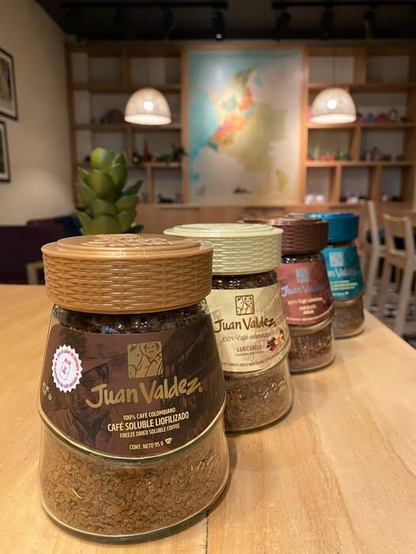

Le Tejo est le sport national de la colombie

Je vous conseille des très beau lieu a visiter comme la Mar Caribe et et Cartenga


Si vous aimez les séries, je vous conseille de regarder comme série "Yo soy Betty" qui contient 335 épisodes et "La reina del flow" qui contient 3 saisons de 237 épisodes.


Ceci est une image des tenues et bijoux traditionnel


La robe traditionnelle est hyper colorée avec plein de volants, ce qui fait trop beau quand les danseuses tournent pendant les fêtes.
Les colliers en perles sont faits à la main par les tribus indigènes.C'est un savoir-faire qu'il se transmettent de génération en génération, donc chaque pièce est vraiment unique.
La Colombie vibre au rythme de la salsa et de la cumbia, portées par les spectacles légendaires de Cali et une énergie festive unique qui enflamme la scène internationale.

Avec des icônes comme Shakira, Carlos Vives ou encore Karol G, la Colombie fait danser la planète entière et exporte ses rythmes partout à l'international.
Côté écran, des acteurs incontournables comme Sofia Vergara et Carlos Torres représentent le talent et le charisme colombien à travers le monde.